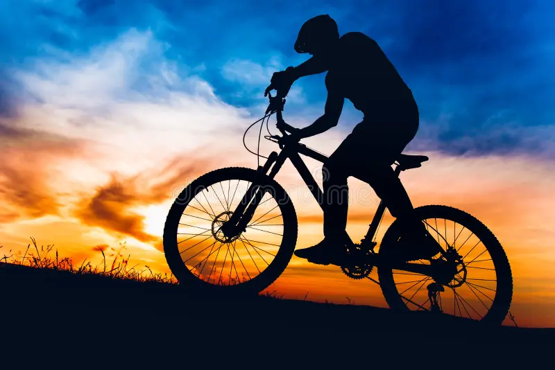
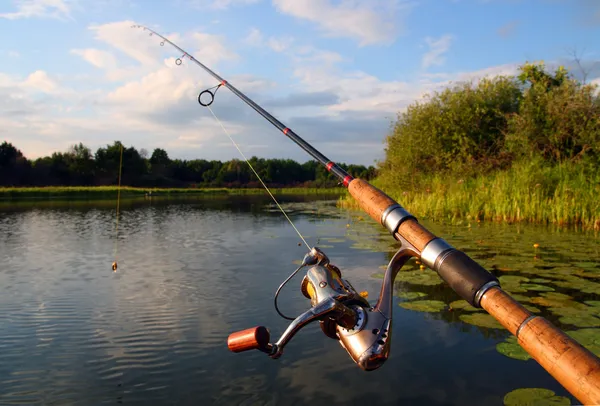

Hobbies
Biking
Biking is somthing that I like to do because it relaxes me after a long day. I also, like to go biking because it helps me take a break from the things that im doing throught the day. It also helps me exersise and stay healthy. Overall, biking helps me take breaks, exersise, and helps me relax.

Gaming
Gaming is one of my favorite hobbies. I like a varity of games like mobile games and console games. I like to play because it is relaxing and I can connect with friends and play with them. I also like it because it transports you into a different world with the visual effects and the storyline. It's like a book but better because its more visual and basically makes you the character. I also, like it for the good effects it has on your brain, like more problem-solving skills and strategic planning.

Fishing
I like to fish because of the calm environment while fishing and the outdoor sounds. I usualy fish with friends and family, and once every year I go on a big fishing trip in Wisconsin with a friend. This big trip makes us bond and creating lasting memories.
